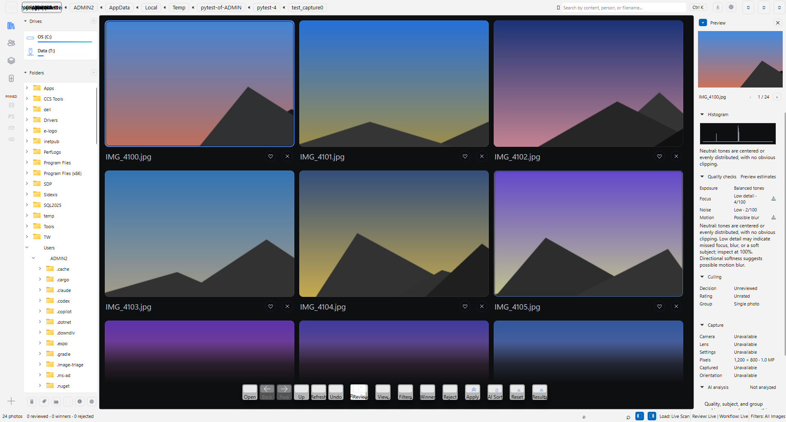

Mockup, not the real app. The window is a real Image Triage capture (24 generated photos, 1920 x 1032). Everything coloured is the proposal. Click the chip, or click AI Sort in the toolbar.

Why the status bar. It already holds app state (counts, Load, Review, Workflow, Filters) and has free room on the left, so the chip adds nothing to the toolbar or the title row. The AI actions it relates to sit directly above it. The top bar is shown as the alternative.
One click, one place. The chip opens a small summary; its primary button opens the full Set up AI page (ai_setup_mockup.html). The AI menu, the command palette and the first Analyze open the same page.
First run never blocks. Analyze works without setup (stacks, duplicates, blown-out and soft frames), so the prompt offers both choices. Asked once; Analyze without it is remembered until the chip changes state.
Real numbers. 520 MB is the compact install for a laptop without a GPU: runtime 350 MB plus faces 170 MB. A GPU PC would read 7.1 GB. Ranking stays an opt-in on the setup page.